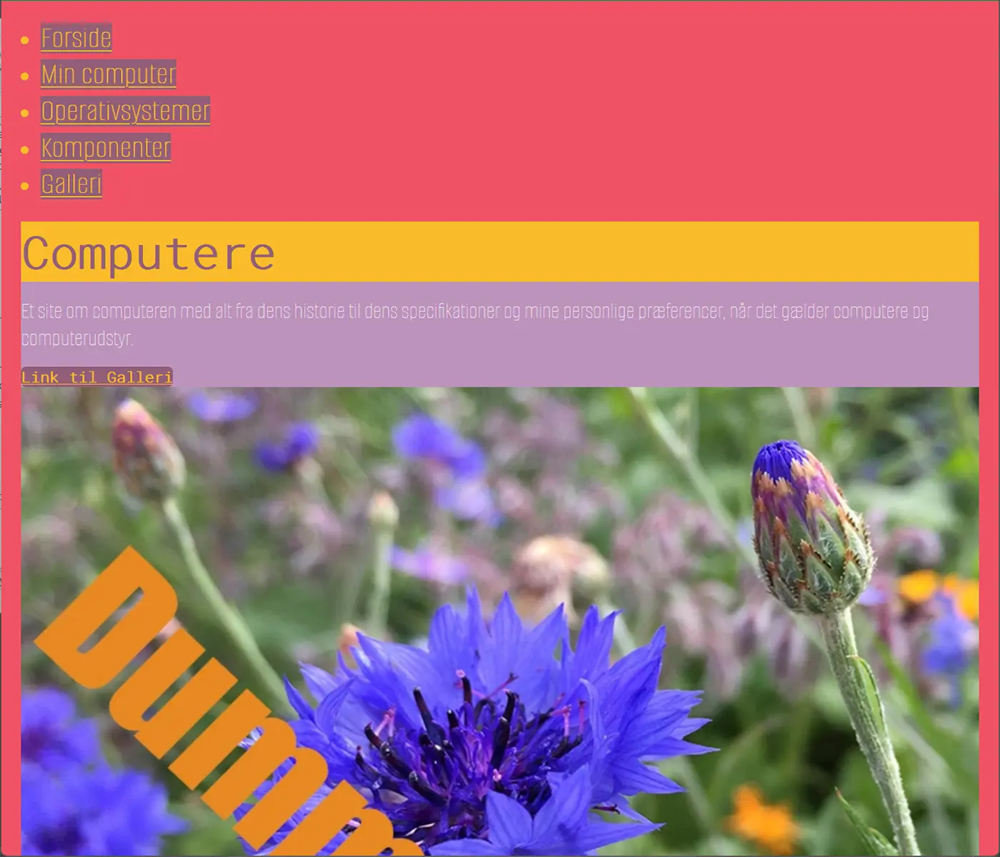
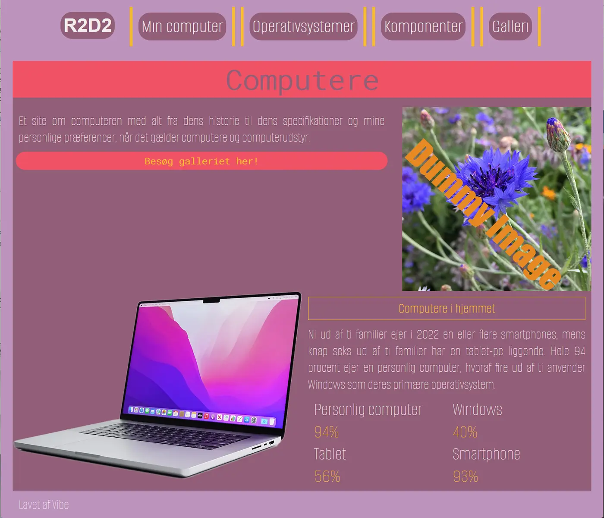
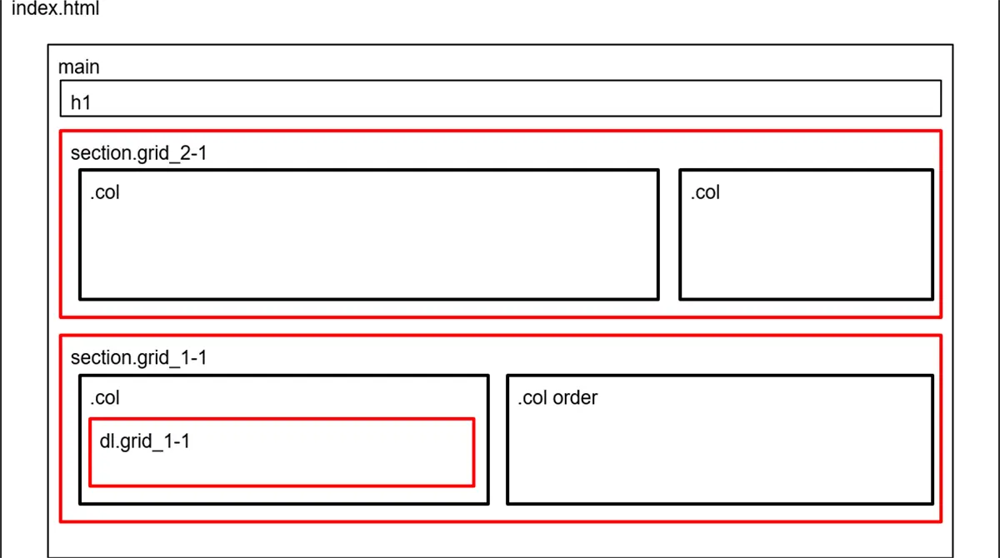
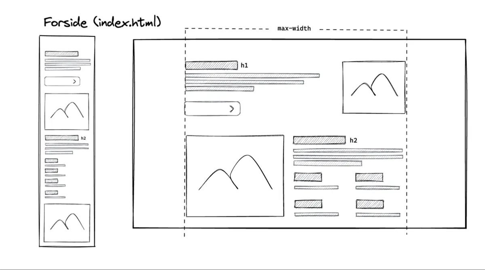

GRUNDLÆGGENDE WEB - MOBILSITE
Jeg har valgt at dele mobilsitet og emnesitet op på hver deres side og beskrive nedenfor hvilken viden og erfaring jeg har tillært mig
På dette tema fik vi en grundlæggende forståelse for indhold på et website. På temaet lærte vi at sætte en website op med HTML og CSS.
Vi blev præsenteret og fik gennemgået forskellige filtyper, såsom .jpeg, .jpg, .svg, .webp og .gif.
Vi fik gennemgået i
undervisningen hvad forskellen var på de forskellige filer og hvorfor vi bruger dem.
Jeg har brugt .webp til mine sites generelt, da deres filstørrelser er mindre og derfor risikerer
man ikke at sitet er
lang tid om loade, fordi billederne er for store.
Temaets indhold var skabt på forhånd og vores opgave var at sætte koden op i html og css, ud fra de
udleverede
wireframes og layoutdiagrammer. Vi havde løbende undervisning i html og css- herunder grids, Media
queries og flexboks.
Jeg har i min studiestartsprøve sat websitet op med grid, ud fra udleverede wireframes og
layoutdiagrammer. Jeg har
brugt Media queries til at gøre websitet responsivt. Og kodet mobilfirst.
Vi har på temaet fået indtroduktion og arbejdet med programmerne visual code – herunder forskellige extensions såsom prettier og validering af HTML og CSS, Filezila og adobe XD. Visual code er et program der bruges til at indeholde kode og hvor der bla. kan oprettes css og html filer.
Designprincipper
Vi har fået gennemgået generelle designprincipper som: gestaltlove, farveharmonier, kontrast og
tekstopsætning. Jeg har
arbejdet ud fra loven om nærhed. Loven om nærhed handler om at ting tæt på hinanden er beslægtede.
Derfor at tekst og
billeder der er tæt på hinanden, hører sammen. På sitet kan man se det i forhold til overskrifter,
og tekst indhold der
er tættere på det billede det hører til. Når jeg ser tilbage på det nu, kan jeg se at jeg godt kunne
have arbejdet mere
på dette.
Jeg har også arbejdet med loven om lukkethed og bokse der har forskellige farver, og viser det
content frem der er
indeni.
Mobilsite
På dette tema havde vi både en temaopgave der bestod i et mobilsite der indeholdte udleveret tekst og billeder, sat op med html og css.
Studiestartsprøve
Vi afsluttede med en studiestartsprøve der bestod i at sætte mobilsitet op ud fra udleverede wireframes og layoutdiagrammer. Wireframes bruges til at vide hvordan man vil sætte sit site op og layoutdiagrammer bruges til at vise sin HTML kodnings layout
Layoutdiagram
Eksempel på layoutdiagram der blev udleveret og vi kodede efter.
Her kan ses, at sitet er delt op i grid. med classes som section_grid_2-1.
Wireframe
Eksempel på wireframe, vi fik udleveret og viste hvordan indholdet skulle sættes op.